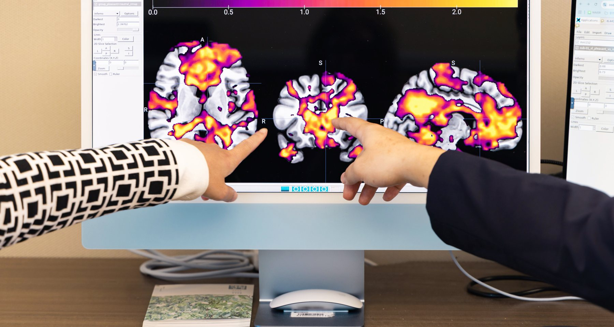
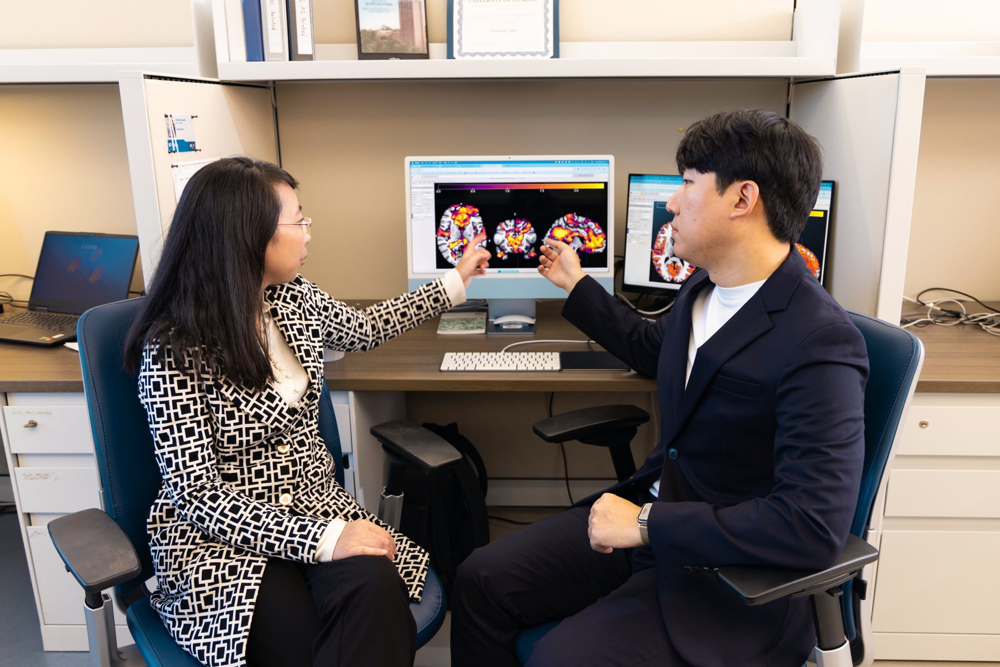
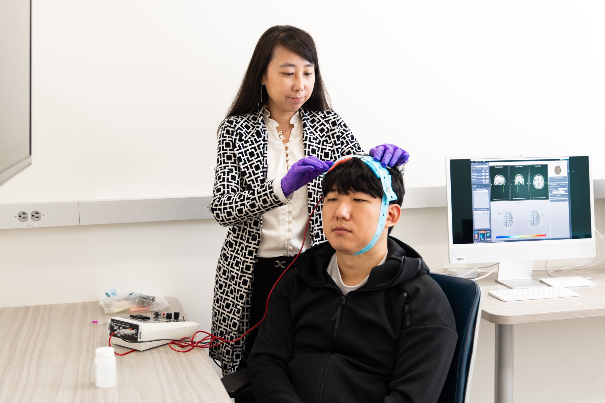

Vanderbilt Center for Intelligent Imaging
From Imaging to Intelligence.
AI that makes every medical image count, from how it is acquired to how it guides each patient's care.
Vanderbilt Health's focal point for intelligent imaging.
Housed in the Vanderbilt University Institute of Imaging Science and led by Dr. John C. Gore and Dr. Ruogu Fang, VCII builds AI for the whole imaging cycle. Each scan informs the next decision, and each patient's outcome improves the next scan.
For clinicians, scientists, engineers, industry, and partner centers: anyone with an imaging question.


How imaging becomes intelligence.
Imaging becomes intelligence, and intelligence shapes the next scan. Six stages run around a patient-specific digital twin, and every outcome feeds back into the models, the next acquisition, and the next intervention.
- Earlier, more accurate diagnosis
- Individualized treatment and care
- Adaptive, optimized intervention
- Continuously improving outcomes
Two directors, one center.
John C. Gore, PhD
Founding Director
- Director, Vanderbilt University Institute of Imaging Science
- Hertha Ramsey Cress Chair in Medicine
- Professor of Radiology & Radiological Sciences
- Vice Chair of Research
Ruogu Fang, PhD
Founding Director
- Professor of Biomedical Engineering
- Flowers Family Dean's Faculty Fellow
- Professor (affiliated) of Electrical & Computer Engineering, Computer Science, Radiology, Biomedical Informatics
From the center
All news →- Cerebra, a multidisciplinary AI board for dementia, accepted in Nature Biomedical EngineeringNature Biomedical Engineering
- Invited talk at the Montreal AI and Neuroscience (MAIN) Conference: "Bridging Minds and Machines"MAIN 2026, Montréal
- Dr. Fang presents "From Images to Intelligence: Foundation Models, Digital Twins, and Agentic AI" at the VUIIS RetreatVUIIS Retreat
- Invited talk at the Center for Computational Systems Biology Retreat on digital twins and agentic AI for brain healthVanderbilt CCSB
- Invited talk at the BMES Annual Meeting on brain digital twins, foundation models and agentic AIBMES 2026, Orlando